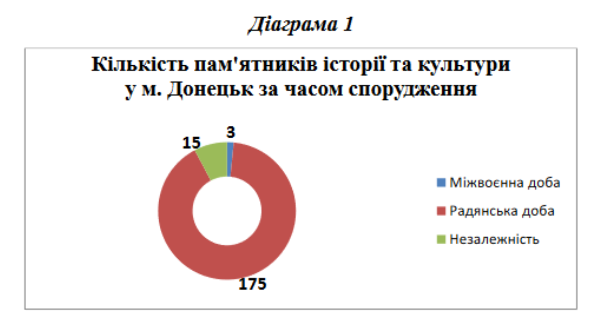
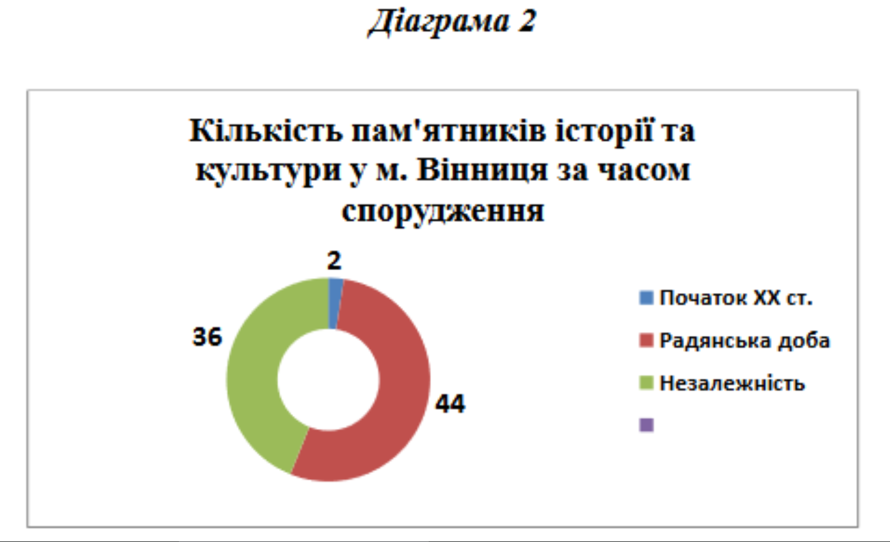

МОНУМЕНТАЛЬНО-МЕМОРІАЛЬНІ ЛАНДШАФТИ ДОНЕЦЬКА ТА ВІННИЦI
Середфакторів ідентифікації та самоідентифікації важливе місце посідає символічний простір, складовою якоговиступають пам’ятники, спрямовані на увічнення найвизначніших подій історії, державних діячів, та позначають важливі для певного соціуму смисли. Проблема громадянської самоідентифікації постала у весь свій зріст в умовах російської агресії у східній частині України. Зовнішнє вторгнення виявляється не лише у військовій, політичній, економічній, соціальній, але і у свідомісній площині. На формування останньої великий вплив справляють меморіальні об’єкти, які «супроводжують» містян протягом їхнього щоденного життя, біля яких відбуваються різного роду ритуальні дії(покладання квітів, фотографування, мітингування, читання поезій тощо). Донецьк –один з п’яти мегаполісів України та найбільше місто окупованої частини України, розташованийу південно-східній частині України. Протягом ХХ ст. вінперетворився на індустріальний центр у межах Російської імперії, СРСР,незалежної України. Вінниця перебуваєу центрі держави, є найбільшим за чисельністю населення містом Правобережної України, з тяглою історичною біографією. Відбитком особливостей їхнього розвиткувиступає монументально-меморіальний простір, який, у свою чергу, справляв(є) вплив на світогляд мешканців і через нього–на соціальну поведінку. Дослідницький інтерес становить пам’ятниковий ландшафтцих двох міст, неоднакових за історичною динамікою.РегіональнаідентичністьДонецька та Вінниціпотрапили в поле зору науковців від початку 2000-х рр.Дослідники приділили певну увагу пам’ятниковомупростору місту контексті проблемиконструювання уявленьпро минуле, привернули увагу до регіональнихідентичностей[3; 6; 7; 8]. Проте тема меморіального простору названих сітіпорушена у ширшому контексті інших проблем, які мають дотичний характер. З огляду на цемета даного дослідженняполягає в аналізі монументально-меморіального простору Донецька та Вінниці, який є втіленням певних ідей і справля(в)є вплив на свідомість його жителів. Воно спирається на опрацювання законодавчих документів, реєстрів пам’яток історії та культури, інформаціїперіодичної преси.До Державного реєстру нерухомих пам’яток України (місцевого значення) віднесено 22 пам’ятники радянської доби у Донецькутадва у Вінниці –один радянської доби(хірургу, педагогу Миколі Пирогову), один періодунезалежності(українському поету та правозахиснику Василю Стусу)[9; 12].З22 монументів у Донецьку два–Б.Хмельницькому та Т.Шевченку –позиціоновані як пам’ятки монументального мистецтва, решта мають статус пам’яток історії. Три об’єкти встановленоу міжвоєнні роки–дві братські могили червоноармійців (1920 р.) іпам’ятник Ф.Дзержинському (1937 р.). 16 з’явилися у 1943–1945 рр. навшануваннязагиблих у боротьбі за звільнення від німецько-нацистської окупації. Це братські могили та три персональні монументи (Ф.Гурову, Ф.Грінкевичу, М. Табунову). Три пам’ятники –О.Пушкіну, Б.Хмельницькому, Т.Шевченку –датовані 1955–1972 рр.[12].Радянський пам’ятникМ.Пирогову у Вінниці на облік узято 1971 р., пам’ятникВ.Стусу було зведено 2002 р. Тобто пам’ятки історії та культури у Донецьку, що перебувають під охороною держави, мають винятково, у Вінниці –частково радянське походження.Виразнішу картину формування монументально-меморіального простору у двох містахподаютьреєстри пам’яток історії та культури[12; 14].У Донецьку зафіксовано 193 пам’ятники. Три з них спорудженоу міжвоєнний період, 15 –у роки незалежної України, найбільше –175 –з’явилися протягом 1940-х –1980-х рр. (Діаграма 1)[14]. За тематичною ознакою 43 пам’ятники пов’язані з «Великою Вітчизняною війною», 39 –братські могили, 20 монументів присвяченоподіям «революції та громадянської війни», 15 –радянським діячам, 9 –письменникам, 7 –праці тощо.
Отже, формування меморіального простору Донецька відбувалося переважно протягом другої половини ХХ ст. Монументи, передусім, відображають історію становлення та розвитку радянської влади на Донеччині, що добре ілюструє, наприклад, могила борців за радянську владу (1921–1922 рр.) або пам’ятник керівнику «Донецько-Криворізької радянської республіки» Артему (Ф.Сергєєву) в центрі міста на вулиці, що має його ім’я. Досить добре пам’ятники місцевого значення репрезентують тему боротьби проти загарбників у роки Другої світової війни. У радянській традиції виконаномонументи українським діячам –Т.Шевченку, І.Франку, Б.Хмельницькому. Показово, що пам’ятник Б.Хмельницькому встановлено у периферійному Пролетарському районі міста, амонумент В.Леніну височить на центральній площі Донецька. До речі, В.Ленін, Т.Шевченко, Б.Хмельницький були найпоширенішими постатями в УРСР, увічненими у пам’ятниках.УВінниці станом на2014 р. фіксувалосяпонад80монументально-меморіальнихспоруд(пам’ятники, погруддя, надмогильні плити) [10].Найстарші з’явилися на початку ХХ ст.: у 1901 р. зведено могилу засновника психоневрологічної лікарні В.Кузнєцова, 1910р.–погруддя М.Пирогова перед обласною клінічною лікарнею, що носить його ім’я. Три встановлено у 1944 р., 41–у другій половині ХХ ст., 36 сталинадбаннямдоби незалежності(Діаграма 2)[10]. Тобто перше, що привертає увагу –у Вінниці на відміну від Донецька майже половина меморіальних об’єктів зведеноу роки незалежності України.За тематичним спрямуванням у місті 8 братських і 14 індивідуальних могил. 317515Кількість пам'ятників історії та культури у м. Донецьк за часом спорудженняМіжвоєнна добаРадянська добаНезалежність Український вимір має«Пам’ятний знак на честь перемоги козацьких військ під командуванням І. Богуна над польсько-шляхетськими загарбниками», який встановлено 1954 р., до 300-річчя т.зв. «возз’єднанняУкраїни з Росією». 9 меморіальних об’єктівприсвячено «борцям за радянську владу», 25 –учасникам «Великої Вітчизняної війни»[11].Окрім традиційних для радянського простору, у Вінниці було встановленопам’ятники вихідцям з Вінниччини –М.Пирогову (два у 1971р.,один1977 р.), М.Коцюбинському (1989). Загалом на однойменній вулиціу місті є щонайменше п’ять меморіальних споруд, присвяченихМ.Пирогову, що засвідчує повагу містян до засновника військово-польовоїхірургії.
У роки державної незалежності пам’ятниковий ландшафтобох міст поповнювався новими об’єктами. За спостереженням О. Гайдай, діяльністьмісцевої влади щодосимволічного простору міст розгорталася під впливомдержавної меморіальної політики та особливостей регіональної історичної пам’яті. О.Гайдай відзначила, що місцеві еліти Центральної України загаломподіляючирегіональні історичні оцінки, перебували під помітним впливом столиці[1]. На Сході України місцева влада у площині історичної пам’ятідемонструвала вищий рівень автономності відносноцентру.Як показали Г.Денисенко та О.Денисенко, найбільша кількість встановлених у незалежній Україні пам’ятників і пам’ятних знаківзакономірновшановують жертв Голодоморутаполітичних репресій[3, 193]. На цьому тлі у Донецьку протягом 1990-х –2000-х рр. було зведено монументи Герою Радянського Союзу Ф.Толбухіну, загиблим міліціонерам, засновнику Донецького металургійного заводу Дж. Юзу, оперному співаку А.Солов'яненку, жертвам політичних репресій, воїнам-24436Кількість пам'ятників історії та культури у м. Вінниця за часом спорудженняПочаток ХХ ст.Радянська добаНезалежність інтернаціоналістам, жертвам Голокосту, герою-рятівнику, ліквідаторам Чорнобильської катастрофита інші. У центральній частині міста встановленодва прижиттєві пам’ятники –С.Бубці, українському легкоатлету, чемпіону Європита світуу стрибкахіз жердиною, Герою України, та російському співаку Й.Кобзону, вихідцю з м.Часів Яр Артемівського району Донецької області. У 1999 р. на площі біля виставкового центру «Експо-Донбас», а у 2007 р. –на бульварі Пушкіна біля будівлі Донецької обласної держадміністрації були встановлені двікопії «Пальми Мерцалова». Це –скульптурне зображення пальми, виготовлене у 1896 р. робітниками Юзівського металургійного заводу О.Мерцаловим і Ф.Шкаріним для Всеросійської промислово-художньої виставки у Нижньому Новгороді, на якій вона отримала Гран-прі. За задумом скульптура символізує цілеспрямованість, єдність, багатство і процвітання та є виявом робітничої майстерності[16].В цілому зведення меморіальних об’єктів у порадянські десятиліття орієнтувалося на формування гордості за визначних вихідців із Донеччини, у чому місто не є винятковим. Принциповажвідмінність Донецька полягає у тотальному збереженні на його вулицях радянськихпам’ятників. У місті на початку 2014 р. залишалися недоторканими монументи В. Леніну, С.Кірову, Ф.Дзержинському, Артему, «борцям за радянську владу», «полеглим комунарам» та іншим дієвцям «Громадянської» та «Великої Вітчизняної» воєн[17, 58]. При цьому був відсутній монумент, який би вшановував жертви Голодомору, правда у 2008 р. на центральній вулиці встановлений пам’ятний знак –кам’яна брила, на якій викарбовано: «Здесь по велению наших сердец заложен камень на строительство мемориала всех невинно убиенных и замученных»[19].Більше того, у вересні 2008 р. депутати Донецької міськради майже одностайно відхилили проєкт документу«Про заходи щодо ліквідації символів тоталітаризму у м.Донецьку», підготований на виконання указуПрезидента України «Про заходи у зв'язку з 75-ми роковинами Голодомору 1932–1933 років в Україні»[18]. Така реакція міського депутатського корпусу повністювписується у спостереження Т.Кузьо щодо до того, що з-поміж регіонів України у Донбасі найбільше респондентів (72%) підтримали твердження, що локальні громади мають право вшановувати своїх героїв і традиції[5, 303]. Продовженням цієї позиції стало встановлення 8 вересня 2009 р., у День визволення Донбасу від нацистських окупантів у центрі Донецька пам’ятника генералу Ватутіну. Виступаючи на церемонії відкриття, тодішній міський голова О. Лук’янченко заявив, що пам’ятник генералу –свого роду протест мешканців міста проти «переписывания истории официальным Киевом». Варто нагадати, що генерал М.Ватутін –Герой Радянського Союзу–не мав жодного відношення до міста чи області, він не брав участі в боях за звільнення Донбасу від окупації. Тому спорудження пам’ятника мало на меті стало зайвим приводом згадати недобрим словом «бандерівців», від рук яких за радянською версією загинувгенерал [15]. Цей об’єкт з’явився восени 2009 р.невипадково, адже наближалися чергові президентські вибори, а з ними й нагальна необхідність місцевої еліти мобілізувати «свій» електорат, вдаючися до технології протиставлення «донецького сходу»«львівському заходу».У Вінниці у роки незалежності з’явилися 36(!)монументальних об’єктів, яківшановують жертв тоталітарного режиму (Братська могила 9 432 жертв сталінських репресій, Пам’ятнийхрест жертвам сталінських репресій, Меморіал Жертвам сталінського терору 1937–1938 років, меморіал жертвам Вінницької трагедії),Голодомору, воїнів, полеглих в Афганістані, загиблих у Чорнобильської трагедії, та присвячено визначним українцям і, зокрема вінничанам –В.Стусу, Г.Артинову, Т.Шевченкута інші. У 2009р. у центральному парку започатковано алеювидатних земляків. Кілька об’єктівзафіксували знакові для вінничан елементи міського життя –пам’ятнийзнак вінницькому трамваю, пам’ятникукраїнській пісні «Пісня», пам’ятникхудожнику[4]. До слова сказати, Вінниця стала найпершимобласним центром, де центральний пам’ятник Ленінубуло прибрано вже 1992р., хоча відповідне рішення міськрада прийняла двома роками раніше. Для уникнення можливих конфліктних ситуацій демонтаж проводили вночі. У вінничан ця подія помітних емоцій не викликала[1].В ціломумонументально-меморіальніпросториДонецька та Вінницімають спільні риси, але значно більше відмінностей.До споріднених ознак відноситься вагома радянська складова пам’ятникового ландшафту. Хоча показники радянського формату неспівставні: 91% у Донецьку та 54% у Вінниці. Як зауважив І.Симоненко, велика кількість комуністичних пам’яток не є безневинним анахронізмом радянської доби, адже тиражована монументальна пропаганда тоталітаризму активно працювала й продовжує впливати на ретрансляцію комуністичної міфотворчості новим генераціям українців[17, 57]. Поєднує обидва міста меморіалізаціявизначних осіб, пов’язаних з їхньоюісторією, але, наприклад В.Стуса у Вінниці вшанованоу пам’ятникута найменуванні площі, а в Донецьку скромно обмежилися встановленням барельєфу при вході до корпусу університету, де він навчався. До відмінностей віднесемо домінування у Донецьку станом на 2014р. радянських пам’ятників, які консервували радянськуідентичністьвже у незалежній Україні. У Вінниці більшість радянських меморіалів мають узагальнюючий характер, у Донецьку вищий рівень їхньої персоніфікації. У роки незалежності у Донецьку встановлено 15 пам’ятників, у Вінниці –36, переважно присвячених людям, життя та діяльність яких була пов’язана з містом чиобластю. Сучасні пам’ятникиу Донецьку меншою мірою, наче «крізь зуби» відбивають загальний меморіальний простір сучасної України. Вінниця чітко рухається у його фарватері. У Донецьку пам’ятники«стоять», нерідко у динамічних позах, що має засвідчувати рух уперед, у Вінниці сучасні об’єктиу сидячому положенні(Г.Артинову, М.Коцюбинському, Т.Шевченку), що теж має значення. Сидячі меморіали надають камерності, людяності тим, кому вони присвячені. Ці постаті зафіксованіу камені, але на одному рівні з сучасними містянами. Донецькі ж об’єктиза радянською традицією«кличуть» до неосяжної мети, своєю динамікою формують уявлення про вищість, необмеженість перспектив.Отже, монументально-меморіальний простір Донецька вирізняв(єть)ся наповненням переважно радянського змісту, який і на межі ХХ–ХХІ ст. не зазнав істотних змін на відміну від Вінниці та більшості великих міст України. Ця обставина, безумовно, впливала на формування специфічної ідентичності, що укладалася у поняття місцевого, «донецького» патріотизму, який протиставлявся українському проєкту. Вінниця, навпаки, виразнорухалася в його межах.